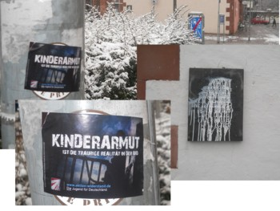
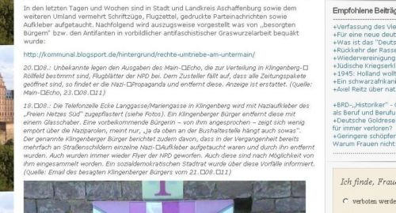

Diese ehemalige Rubrik von kommunal wurde mit dem 21.04.12 eingestellt. Neonazi-Aktivitäten sowie artverwandte Schweinereien können nun bei aburg.org gemeldet werden.
Chronologisch, aktuellste Daten oben
2012
21.04.: Die NPD verteilt – wohl anläßlich des bundesweiten Aktionstages – zwischen 12 und 13 Uhr in der Aschaffenburger Innenstadt Flyer. Die Route ist dabei etwa Goldbacher Straße – Roßmarkt – Herstallstraße – Steingasse. Es muss eine sehr schnelle und unauffällige Aktion gewesen sein, da verschiedene Personen, die zu dieser Zeit in der Stadt unterwegs sind, nichts mitbekommen.
In Damm werden etwa zu dieser Zeit Euro-feindliche Aufkleber verklebt. Außerdem verteilt: Flyer vom „Freien Netz Süd“ mit der Losung „Soziale Ausbeutung stoppen – Zeitarbeit ist Sklavenarbeit“, was bei Nazis, die historisch für ihre Sklavenarbeit berüchtigt sind, extrem zynischen ist! (Quelle: Info von Mitgliedern des Bündnis gegen Rechts, AB vom 24.04.12)
08.04.: Ob es sich um das selbe Osterfest wie unten (08.04.) handelt, ist ungewiss: Der Kreisverband der NPD feiert ein Osterfest mit angeblich 50 Teilnehmenden, darunter auch Parteiprominenz aus Hessen. (Quelle: Homepage der NPD AB-MIL, Seitenaufruf vom 24.04.12)
08.04.: „Die Nationale Frauenorganisation (RNF) im NPD-Kreisverband Aschaffenburg-Miltenberg“ (wir fragen: Sind das zwei oder sogar drei Frauen?) trifft sich angeblich zum „Osterfest mit Familien und Freunden“. Die muss allerdings nicht unbedingt am Untermain gewesen sein, da keinerlei Ortsangaben gemacht werden; ggf. war es auch irgendwo in Bayern. In jedem Fall wurde durch Ostereierchsuchen „zum Erhalt unserer Kultur“ beigetragen. (Qulle: Homepage der NPD AB-MIL, Seitenaufruf vom 11.04.12)
06. auf 07.04.: Im Ortskern von Schweinheim, rund um die Kirche „Maria Geburt“, werden Aufkleber der Kameradschaft Aachener Land verklebt, die meisten Aufkleber ans Schaufenster der Sparkassenfiliale. (Quelle: Augenzeugenbericht an kommunal.tk)
05. auf 06.04.: Rund um das Dalberggymnasium in Aschaffenburg und das angrenzende Wohngebiet zwischen Würzburger Straße und Großmutterwiese wird NPD-Propaganda verklebt. (Quelle: Augenzeugenbericht an kommunal.tk)
05.04.: In der Nähe des Bürgstadter Rewe-Marktes werden vermehrt Nazi-Aufkleber (Widerstand, JN, freies Netz Süd, DV Franken) festgestellt und entfernt. Soweit nicht der Rede wert, nur: Inhaltlich ist das alles breit gefächert (leichter Schwerpunkt auf „Todesstrafe für Kinderschänder“) und auch von den Organisationen her bunt gemischt. Hier entsteht scheinbar eine Szene, der wirklich ganz egal ist, was sie verkleben, Hauptsache es ist irgendwie knallrechts. (Quelle: Augenschein Red. Kommunal.tk am 05.04.12)
März: Auf Seite 157 wird unter „Neonazismus und Kameradschaften“ im Verfassungsschutzbericht Bayern 2011 festgestellt, in diesem Spektrum gäbe es lediglich 70 Personen in ganz Unterfranken, darunter auch welche in Aschaffenburg. Eine konkrete Zahl wird nicht genannt. Hält der VS bewusst Informationen zurück oder sind die Antifaschisten am Untermain mal wieder besser informiert? (Quelle: Verfassungsschutzbericht Bayern 2011, München 2012)
17.03.: Im Musiklokal Beavers in Miltenberg findet ein Event des MC Outlaws („Outlaws Mainfront“) statt. Als „Hot Party Night“ wird u.a eine „Erotic-Show“ angekündigt. Dazu Musik von Stainless Steel, „Beste Coverband Böhse Onkelz / Frei.Wild“. Was von den Lieder der Bands Frei.Wild und Böhse Onkelz zu halten ist, dürfte bekannt sein oder kann unter den Links nachgesehen werden. (Quelle: Flyer zur Veranstaltung)
10. auf 11.03.: In Bürgstadt werden (wohl im Bereich Sandweg) NPD-Flyer mit den naiven rechten Antiglobalisierungsparolen in Briefkästen und an Autoscheiben verteilt. Teils werden diese von Einheimischen noch am 11. März eingesammelt und der Altpapiertonne zugeführt. (Quelle: Bericht einer Augenzeugin)
02. auf 03.03.: Im Aschaffenburger Brentanoviertel und Umgebung werden massivst NPD/JN-Aufkleber verklebt, schätzungsweise über 150 Stück. Aber: „Die Straßen sind soweit wieder sauber“ berichtet ein Augenzeuge. (Quelle: Augenzeugenbericht vom 03.03.12) Nachtrag: Am evangelischen Jugendzentrum in Aschaffenburg hingen auch Aufkleber an Türen, Fenstern und Laternen. Dort ist aber mitlerweile auch wieder alles sauber! Waren diese hässlichen „Todessstrafe für Kinderschänder!“-Aufkleber. Es wurde alles entfernt, bevor der öffentliche Betrieb wieder losging! (Quelle: an kommunal.tk gesandte Info, 05.03.12)
28.02.-03.03.: In diesem Zeitraum weden die Fassaden mehrerer Verbrauchermärkte in Elsenfeld (Bahnhofstraße) mit „offensichtlich rechtsradikalen Parolen verschmiert“ (Main-Echo). Quelle: ME Obernburg, 05.03.12)
01.03.: Der NPD-Kreisverband Aschaffenburg-Miltenberg erklärt voller Stolz, dass sein Mitglied Sigrid Schüßler familienpolitische Sprecherin der Bayern-NPD sei und für Titel Thesen Temperamente (ARD) interviewt wurde. Neben Propaganda erklärt die NPD auf ihrer Homepage auch, dass Sigrid Schüßlers Ehemann Falko (siehe unten die Meldung vom 15.02.) bereits mit 17 Jahren einen „Deko-Karabiner“ in seinem Zimmer hängen hatte. Das ist dann aber auch schon der interessanteste Teil der NPD-Meldung. (Quelle: Homepage der NPD AB-MIL, Eintrag vom 01.03.12)
15.02.: „Stefan F. aus Friedberg und Falko S. aus der Nähe von Aschaffenburg haben einiges gemeinsam. Eine Vorliebe für militärische Übungen etwa, die sie regelmäßig in der Reservistenkameradschaft Wetterau ausleben. … Diesem Hobby werden sie nicht mehr lange nachgehen können. Denn neben ihrem Engagement als Reservisten haben sie noch etwas gemeinsam – die rechtsextreme Gesinnung. Wie der Verband der Reservisten der Frankfurter Rundschau bestätigte, sind sowohl gegen Stefan F. als auch gegen Falko S. bereits Ausschlussverfahren eingeleitet worden. … Man sehe die Gefahr, dass Neonazis über die Reservistenkameradschaften versuchen könnten, sich an den Schusswaffen ausbilden zu lassen … Bereits seit Jahrzehnten ist der 45-Jährige [Falko S.] rechtsextremistisch aktiv. Sein Lebenslauf liest sich wie das Muster einer Neonazi-Karriere, die in den 80er Jahren bei der mittlerweile verbotenen Wiking-Jugend beginnt, über den bayerischen Landesvorsitz der ebenfalls verbotenen Freiheitlichen Deutschen Arbeiterpartei (FAP) führt und bei der NPD endet. Falko S. ist inzwischen regelmäßiger Gast bei NPD-Demonstrationen und – laut Impressum – Administrator der Internetseite der NPD Aschaffenburg. Bei Falko S. sei das Ausschlussverfahren bereits abgeschlossen …“ (Quelle: Frankfurter Rundschau online, 15.02.12)
11./12.02.: Laut Angabe des NPD-Kreisverbandes Aschaffenburg-Miltenberg hat die knallrechte Partei einen Ortsverband Bachgau (Großostheim, Schaafheim, Stockstadt) gegründet. Allerdings muss die NPD zugeben, dass bei ihrem Engagement in Ringheim (Ortsteil von Großostheim) die Reaktion einer dortigen Bürgerinitiative im Dezember letzten Jahres eindeutig ausfiel; diese distanzierte sich „von dem ominösen Flugblatt der angeblichen NPD Bachgau“. (Quelle: Seite der NPD AB-MIL, Eintrag vom 16.02.12; Facebook-Seite der NPD AB-MIL, Aufruf vom 17.02.12)
04./05.02.: Aufgrund der Berichterstattung von kommunal.tk (zur antifaschistischen Demonstration in Aschaffenburg am 27. Januar) antworten mehrere Knallrechte. Die ist nichts Ungewöhnliches, soll hier aber als exemplarischer Fall einmal dokumentiert werden.
Der erste Nazis will Antifaschisten deportieren, „bis der Zug durch so ein Tor fährt mit so doofen schriftzügen dran … von wegen arbeit, Frei und so … dann seit ihr richtig!“ Ein sich „Gelbgrüner NutellaNeger“ nennender Rechter droht: „Wir führen Listen für später“. Und ein gewissen „Zeckenvernichtungsmittelbeschaffer“ meint: „Manche Kameraden haben es vielleicht nicht so mit der Rechtschreibung, dafür wissen sie umso besser wie gegen Leute wie euch tatkräftig vorzugehen ist.“ Rassismus, Gewaltandrohung und Vernichtungsphantasie – mehr wird kaum geboten. Die Gefährlichkeit des Faschismus liegt niemals in seiner (kaum gegebenen) geistigen Potenz; sie liegt in der immer vorhandene Gewaltbereitschaft der ihm zugrunde liegenden (angesoffenen) Männerbünde. (Quelle: kommunal.tk, Beitrag vom 04.02.12)
27.01: Entlang der Aschaffenburger Frohsinnstraße werden kurz vor Beginn des Holocaust-Gedenkmarsches (gleichzeitig Demonstration gegen Neonazis) zahlreiche NPD- und JN-Aufkleber angebracht. (Quelle: Mitteilung eines Beobachters vom 28.01.12) Ab dem Nachmittag werden mehrfach kleinere Gruppen von Nazis in der Stadt beobachtet, so z.B. in der Nähe der Aktion „Tausend Lichter“, welche ebenfalls an den Stolpersteinen der Opfer des Holocaust gedachte. (Quelle: linksunten.indymedia.org, 27.01.12)
26. auf 27.01.: In Großostheim sprühen Unbekannte zwei Hakenkreuze auf Rollläden eines Einfamilienhauses und auf einen Telefonschaltkasten. (Quelle: primavera24.de, 27.01.12)
26. auf 27.01.: Die Gedenkplatte für die Nazi-Opfer an der Rückseite der Sandkirche in Aschaffenburg wird mit weißer Farbe beschmiert (siehe Fotocollage unten, rechte Seite). In der Nähe hinterlassen die Täter vermutlich ihre Visitenkarte: Aufkleber der JN (Fotocollage, linke Seite) und anderer rechter Gruppen. Dieser unwürdige Akt des Vandalismus ist mit Sicherheit eine Reaktion auf die am 27.01. stattfindenen Gedenkveranstaltungen, bsonders auf die Demonstration des Bündnis gegen Rechts (der Rest dürfte die Nazis weniger stören).

07.01.: Der Stützpunkt Franken/Oberpfalz der NPD-Jugend Junge Nationaldemokraten (JN) sei gegründet. Angeblich „waren neben den Kameraden der Division Franken, die einen Großteil der Organisation übernahmen, auch deren Bündnispartner vom Aktionsbündnis Nordfranken, die Freien Nationalisten Weißenburg und sogar die ANS Stormarn anwesend. Ebenfalls der Einladung folgten der Nationale Widerstand Amberg sowie selbstverständlicherweise zahlreiche Mitglieder und Funktionäre der NPD.“ Die JN wurde dabei „als junge Elite des nationalen Widerstandes und deutschen Befreiungskampfes“ bezeichnet. JN-Stützpunktleiter wurde Sven Diem von der Division Franken, einem Zusammenschluss freier Kameradschaften. Wie weit dies Auswirkungen auf die fränkische Region Untermain hat, das wird sich zeigen. Eine erste Kundgebung des neuen JN-Stützpunktes gab es inzwischen in Forchheim unter Gegenprotest des lokalen Bündnisses Bunt statt Braun. (Quelle: Homepages der Division Franken und des Bundesvorstandes der JN, Aufrufe vom 19.02.12)
06.01.: In Hösbach, Ortsteil Sand werden die Bushaltestelle und mehrere Stromverteiler- sowie Telefonkästen mit rechten Parolen beschmiert. Zudem werden knallrechte Aufkleber an Lichtmasten angebracht. (Quelle: Meldung der Polizei Unterfranken vom 12.01.12, veröffentlicht im Internet auf der Polizei-Seite und bei main-echo.de)
01.01.: Das Jahr 2011 endete mit einer Meldung zu Norbert Geis, das neue Jahr beginnt mit einer zu ihm: Bei der durch die Zeitung Prima Sonntag abgefragten Jahresprognose meint der CSU-Rechtsausleger, dass es zwar kein schnelles NPD-Verbot geben werde, dass aber „die NPD unsere Grundordnung nicht haben will – genau wie Die Linke – davon bin ich fest überzeugt. Im Endergebnis wollen beide das Gleiche: eine totalitäre Herrschaft.“ Dümmer kann die Extremismus-Ideologie nicht ausgedrückt werden. Immerhin gesteht Geis ein, dass die Nachweisbarkeit dieser Behauptung „bei der Linken derzeit gar nicht möglich“ sei. Wir müssen Die Linke nicht mögen – aber diese Gleichsetzung mit der NPD hat Die Linke niemals verdient und sie ist zudem eine brutale Verharmlosung der NPD-Nazis. (Quelle: Prima Sonntag, 01.01.12)
2011
31.12.: Norbert Geis (MbB, CSU, Aschaffenburg) steht auf der Autorenliste der knallrechten Zeitung Junge Freiheit (dies kann aber auch heißen, dass er dieser Postille „nur“ ein Interview gegeben hat). (Quelle: nazi-leaks.net; Seitenaufruf von Anfang Januar 2012)
10. auf 11.12.: „Ein Unbekannter hat in der Nacht zum Sonntag ein Loch in die Schaufensterscheibe des SPD-Bürgerbüros in der Goldbacher Straße (in Aschaffenburg) geschlagen. Außerdem brachte der Täter an dem Briefkasten einen NPD-Aufkleber an. Die Kripo Aschaffenburg geht von einem rechtmotivierten Hintergrund aus. … Wie die Beamten vor Ort feststellten, war die Scheibe offenbar mit einem Bierkrug eingeworfen worden. In dem Schaufenster war ein Zeitungsartikel mit Beileidsbekundungen für Opfer rechtsmotivierter Gewalttaten ausgestellt, der im Zusammenhang mit dem aktuellen, bundesweiten Ermittlungsverfahren steht. Insgesamt entstand ein Sachschaden, der nach ersten Schätzungen rund 3000 Euro beträgt.“ (Quelle: Main-Echo, 12.12.11)
03. 12.: Zwei ehemalige Landtags-Abgeordnete aus dem Kreis Miltenberg stehen auf der Adressenliste, die bei den Nazi-Terroristen in Zwickau gefunden wurde: Heinz Kaiser (SPD) und Ludwig Ritter (CSU). Warum Kaiser auf die Liste kam, dürfte klar sein: Er ist bei der SPD – und die ist in dem relativ intelligenzfreien Weltbild der Nazis halt irgendwie links. Dass mit den Stimmen der SPD z.B. das Asylrecht bis zur Unkenntlichkeit zerschossen wurde, was die Nazis damals bejubeln durften, wird ihm hier nicht gedankt. Warum aber der Mömlinger Ludwig Ritter auf der Hassliste der Nazis steht, das entzieht sich nicht nur seiner Kenntnis. Ritter ist bekannt als Erzkonservativer, der auch schon mal vom eigenen Parteifreund gebremst werden musste, damit seine Rede nicht allzu sehr nach „Republikaner“ klang. Gegen ihn können Nazis kaum etwas haben; außer vielleicht aus Konkurrenzgründen: Ritter gilt als so schwarz, dass er selbst bei Nacht und totalem Stromausfall im Kohlenkeller noch einen Schatten werfen kann. Da kommt bei den Braunen dann doch der Neid auf. (Quelle: Main-Echo, 03./04.12.11)
25. auf 26.11: In Kleinostheim wird ein Wohnhaus mit schwarzer Lackfarbe bemalt. Es werden insgesamt zehn Hakenkreuze an die rückwärtige Hausfassade, die Eingangstüre, an Jalousien und auf den Terrassenboden gesprüht. Der Sachschaden beträgt mehrere tausend Euro. Die Polizei vermutet keinen rechtsextremen Hintergrund! (Quelle: http://aida-archiv.de/index.php?option=com_content&view=article&id=2623:26-november-2011&catid=217:2011-november&Itemid=1337)
22.10.: „Vor der malerischen Kulisse der Miltenberger Altstadt informierte der NPD-Kreisverband Aschaffenburg-Miltenberg im Rahmen des bundesweiten NPD-Aktionstages `Raus aus dem Euro´ mit einem Informationsstand die Bürgerinnen und Bürger des Landkreises über die politischen Hintergründe und Ziele der Euro-Lobby, sowie über die wahren Kosten des Euros für jeden einzelnen deutschen Steuerzahler.“ So berichtet die NPD Aschaffenburg-Miltenberg auf ihrer Homepage. Es folgt ein überschwenglicher wie zynischer Bericht mit dem üblichen Partei-Selbstlob, das die NPD noch besser beherrscht als die etablierten Parteien. Fakt ist aber, dass die Miltenberger/innen kaum etwas von dem Infostand mitbekommen haben, selbst jene nicht, die (z.B. wegen einer Hochzeit) gerade vor dem Rathaus und damit in direkter Nähe des Infostandes waren. Allerdings wurde zumindest in einer Wohngegend NPD-Propaganda in die Briefkästen gestopft.
(Quelle: Homepage NPD AB-MIL, Aufruf 26.10.11; Gespräche mit Miltenberger Bürger/innen vom 26.10.11)
20.10.: Mit „rechtsradikalen“ Umtrieben in Klingenberg beschäftigt sich eine Versammlung des dortigen SPD-Ortsvereins. Wie der Ortsvorsitzende schildert, sind in den vorangegangenen Wochen und Monaten im Stadtgebiet vermehrt Aufkleber der NPD und des „Freien Netz Süd“ angebracht worden. Zudem werden offensiv Flugblätter und die Parteizeitung der NPD an die Haushalte im gesamten Stadtgebiet verteilt. „Die ungenierte Verbreitung von rechtem Gedankengut, das sich vor allem an Jugendliche richtet, ist alarmierend“, so der Ortsvorsitzende. „Die SPD-Stadträte kündigten einen Antrag im Stadtrat an, wonach die Stadtverwaltung beauftragt werden soll, zusammen mit der Polizei, der Jugendsozialarbeit und den Vereinen ein Konzept zu entwickeln, wie gegen dieses Problem vorgegangen werden kann. Dazu sei es auch notwendig, sich mit umliegenden Gemeinden auszutauschen und eine Bestandsaufnahme von rechtsextremistischen Aktivitäten zu machen“ (Main-Echo). „Wehret den Anfängen!“ meint der Ortsvorsitzende in diesem Zusammenhang.
So gut und wichtig Aktivitäten gegen Rechts auch sind: Nur leider sind wir längst nicht mehr bei den „Anfängen“. Wahrscheinlich waren wir dort auch nie. Denn der braune Mief machte und macht sich in der Mitte der Gesellschaft immer wieder (mehr oder minder erkennbar) breit. Und so sind auch nicht die NPD und sonstige braune Kameraden das ganz große Problem, sondern die ideologische Durchdringung der Gesellschaft in Deutschland durch autoritäre, rassistische, antisemitische, gewaltakzeptierende Ideen. Und „rechtsradikal“ gibt es – das nur nebenbei – gar nicht, den radikal (also an die Wurzel [der Probleme] gehend) sind Knallrechte gerade überhaupt nicht; historischen waren die Radikalen übrigens auch immer Linke. Bei „rechtsextrem“ – auch das nur zur ergänzenden Kommentierung – scheint die unsägliche Extremismusdebatte durch, die genau jene Mitte entlasten soll, die sich immer wieder so anfällig für knallrechte Ideen erweist; aber das ist dann wirklich ein Thema, das hier nicht behandelt werden kann.
(Quelle: Main-Echo, Obernburg, 25.10.11)
27.09.: Anlässlich einer Veranstaltung der Sparkasse im Kreis Miltenberg zum Thema „Freiheit – Verantwortung – Gemeinsinn“ mit Joachim Gauck startete die NPD Aschaffenburg-Miltenberg nach eigenen Angaben eine „Petition zur Kontoeröffnung“. Nun muss niemand den Veranstaltungstitel oder Herrn Gauck nett finden, interessant ist dennoch, was da passiert. „Der Kreisverband Aschaffenburg-Miltenberg der NPD möchte seit 2008 bei der hiesigen Sparkasse ein Konto eröffnen, was ihr bis heute verwehrt wird“, heißt es in der Petition (die keine ist, da sie sich nicht an eine Behörde oder einen Petitionsausschuss wende, aber das nur nebenbei). Weiter: „Wie sieht es aus mit den ‚demokratischen Grundrechten’, wenn wie hier einer zugelassenen, in Landesparlamenten vertretenen Partei die Eröffnung eines Kontos verweigert wird, um so die regelrechte Arbeit dieser Partei zu behindern?“ Es ist klar: Die NPD versteht nichts von Demokratie, wie denn auch. Sonst wüsste sie, dass eine Kontoeröffnung zwar ein bürgerliches Recht sein mag, jedoch kein demokratisches. Und wenn Sparkassenchef Feußner den kackbraunen Kameraden kein Konto geben will, dann doch aus dem verständlichen Grund, dass es den Bediensteten nicht zuzumuten ist, sich mit solchen braunen Ekelpaketen abgeben zu müssen.
Beim Main-Echo heißt es da sehr unaufgeregt: „Den Auftritt Gaucks nutzte der NPD-Kreisverband Aschaffenburg-Miltenberg zu einer Aktion. Vor der Elsenfelder Sparkassen-Arena wies die rechtsextreme Partei mit Flyern darauf hin, seit 2008 eine Kontoeröffnung bei der Sparkasse verweigert zu bekommen. Jetzt droht eine gerichtliche Auseinandersetzung. Sparkassenchef Feußner demonstrierte Gelassenheit: `Dann sollen sie uns halt verklagen.´“
(Quelle: Homepage der NPD Aschaffenburg-Miltenberg, Eintrag vom 28.09.11; Main-Echo vom 29.09.11)
18.09.: Beim „Tag der Heimat 2011“ des Bundes der Vertriebenen Kreisverband Miltenberg in Obernburg-Eisenbach spricht Rudi Pawelka, pensionierter Polizeidirektor, langjähriger CDU-Funktionär, Anfang der 1970er Jahre zweiter Bundesvorsitzender der damaligen weit rechts stehenden CSU-Freundeskreise und heute Bundesvorsitzende der Landsmannschaft Schlesien. Seine Aussage „`Es ist noch sehr weit bis zum Einvernehmen´ (gemeint: mit Ländern wie Polen oder Tschechien)“ (alle Zitate: Main-Echo) kann getrost so übersetzt werden: Wir werden Polen und Tschechien nie verzeihen, dass wir den Weltkrieg verloren haben!
„Voller Empörung wies er den Satz vom `Tag der Befreiung´ zurück, den der damalige Bundespräsident Weizsäcker am 8. Mai 1985 über das Kriegsende formuliert hatte, und nannte deutsche Politiker `Gralshüter der deutschen Schuld´, die damit `deutsche Opfer verhöhnen´. Die Ostpolitik Willy Brandts wurde bei ihm zur Verzichtspolitik und zum Verrat.“ Dass er den 8. Mai 1945 als „Tag der Befreiung“ ablehnt (und dieser für ihn damit ein Tag der Niederlage ist, was eine Sympathie für das unterlegene Nazi-Regime bedingt) ist angesichts der sonstigen Aussagen auch nicht mehr sonderlich überraschend.
Nochmal Pawelka: „Er betonte, `dass Vertreibung mit Hitler nichts zu tun hat – das sind nur Vorwände.´“ Fast ist es müßig, auf diese Behauptung einzugehen, zu sehr ist sie im Wahngebäude von Schuldabwehr und Projektion der als dem Eigenen (der eigenen Nation oder den Schlesiern) zugeordneten Verbrechen auf andere behaftet. Daher nur in aller Kürze: Zwar war es Hitler nicht alleine, er brauchte schon Millionen von Deutschen in SA, SS, Gestapo, Verwaltung, Industrie und vor allem Wehrmacht, um Terror und Vernichtung durchzuziehen. Aber ohne genau dies – Krieg, Terror, KZ-System etc. – hätte es niemals die Möglichkeit und die Notwendigkeit der Vertreibung gegeben! Ohne den Nazi-Terror, den die später Vertriebenen massenhaft (und offensichtlich absolut mehrheitlich) unterstützt hatten, hätten die vertreibenden Staaten niemals die Rechtfertigung gesehen und niemals vor der Weltöffentlichkeit und den anderen Nationen mit Zustimmung rechnen können.
Und was sagten dazu die Anwesenden bei Pawelkas 50minütiger Rede in Obernburg? Offensichtlich nichts. Aber immerhin: „Einige Zuhörer, auch solche, die selbst aus einer Vertriebenenfamilie stammen, reagierten bei der Rede spürbar zurückhaltend oder skeptisch, und am Ende wirkte der Beifall nach der langen Ansprache in der Eisenbacher Halle eher reserviert.“ (Quelle: alle Zitate aus Main-Echo, 20.09.11)
28.08.: Zum wiederholten Mal werden in der Aschaffenburger Enrsthofstraße einzelne Aufkleber von JN (NPD) und dem Freien Netz Süd angebracht. (Quelle: Augenzeugenaussage per Email vom 29.08.11, zugegangen bei kommunal.tk am 01.09.11)
27./28.08.: Bei Stadtfest in Aschaffenburg werden ca. 15 Rechte gesehen, die Flyer von JN (NPD) und Autonomen Nationalisten verteilen. (Quelle: Augenzeugenaussage per Email vom 29.08.11, zugegangen bei kommunal.tk am 01.09.11)
23.08.: Seit 14.08.11 hat der „Nationale Widerstand Aschaffenburg“ (Miltenberg spielt diesmal keine Rolle) eine eigene Homepage. Ein schon länger bestehender rechter Blog möchte nun gezielt Nachrichten aus der Region AB bringen. Am 23. August gibt es dann unter dem Titel „Vermehrte Volksaufklärung in Stadt und Landkreis Aschaffenburg“ die erste regionale Nachricht: kommunal.tk hat eine Seite, auf der sich mit dem Treiben der Rechten beschäftigt wird. Aus unserer Seite wird dann auch fleißig zitiert, unsere Fotos geklaut und auf der Naziseite gebracht.
Die Qualität des rechten Blogs beweist sich in Überschriften wie „Geringere schöpferische Geisteskraft: Warum Frauen nicht zum Genie taugen“ oder „Rassenunruhen in London: Negerführer Darcus Howe beschwört den Aufstand“. In einer Umfrage spricht man sich dort ganz eindeutig gegen Frauenfußball aus!
Es ist schön, dass kommunal.tk auf dem Blog der kackbraunen Kameraden verlinkt wird; da können die Volksgenossen mal was wirklich Gutes lesen! Dass aber wir unsererseits diesen Blog verlinken, einen Blog von Menschen, die uns allesamt gerne ins Lager sperren oder aufhängen würden (so sie es könnten), das kann niemand ernsthaft erwarten!
(Quelle: Seitenaufruf des Blogs zum Nationalen Widerstand Aschaffenburg vom 23.08.11; Auszüge Screenshots unten)


23.08.: Ja, es langweilt schon. Daher wird nur noch dann auf Leserbriefe der Daschner-Fans (siehe 22.08., 16.08., 03.08.) hingewiesen, wenn sie etwas Neues bringen. Und da haben wir auch schon einen interessanten Hinweis bei Sigrid Lemanczyk aus Schöllkrippen: Sie ist gegen das besagte Urteil zugunsten Gäfgens, stellt sich auf die Seite des Folterandrohers Daschners und endet mit den Worten: „Mit meiner Meinung stehe ich nicht alleine da.“ Es ist das Bewußtsein des volksgemeinschaftlichen Zusammengehörens, des „wir sind die Mehrheit“, das es nicht nur leicht macht, sich hier per Leserbrief zu melden, sondern das auch das genußvolle Suhlen im völkischen Schlamm erlaubt. (Quelle: Main-Echo, 23.08.11)
22.08.: Satte fünf Leserbriefe wenden sich wieder gegen die Entscheidung der Justiz, dem Kindermörder Gäfgen eine Zahlung aufgrund der erlittenen Folterandrohung zu gewähren. Dieser juristische Entscheidung mag zwar seltsam klingen, ist jedoch rechtlich nicht zu beanstanden. Anders bei den Menschen, die sich im Besitz des „gewunden Volksempfindens“ wähnen. Annette Wolf aus Laufach unterstellt, „unsere Gesetze schützen die Verbrecher“. Von „Irrsinn“ bei der Gerichtsentscheidung spricht Elisabeth Zöller aus Miltenberg. Sie hält den Täter Gäfgen für einen „Unmenschen“. Wieder eine Anwaltsschelte spricht Marie Stenger aus Aschaffenburg aus: Bei dem Verteidiger von Gäfgen müsse es sich um „einen würdelosen, geldgierigen Menschen“ handeln. Auch ein Leserbeif aus Nidda veröffentlicht das Main-Echo. Dort hetzt Norbert Gündling gegen „Gutmenschen“ und verlangt einen „Gesetzestext im Sinne des Volkes“. Aus der Geschichte wissen wir, was damit gemeint sein muss. Ganz besonders interessant ist aber der Leserbrief von Hans Schlowak aus Laudenbach. Er hat wohl ganz besondere Knasterfahrung, denn er weiß, dass dort „relativ luxuriöse Unterbringung in hotelähnlichen Justizvollzugsanstalten“ üblich sei. Auch er spricht Tätern die Menschenwürde erstmal ab. Man müsse sich diese erst „verdienen“! „Den Begriff der Würde sollte man daher überdenken“, fordert der Laudenbacher, der – und da scheint sich ein Kreis zu schließen – auch Leiter des Sudetendeutschen Orchesters ist, wie z.B. in der Obernburger Ausgabe der Zeitung vom gleichen Tag zu lesen ist. (Quelle: Main-Echo, 22.08.11)
20.08.: Unbekannte legen den Ausgaben des Main-Echo, die zur Verteilung in Klingenberg-Röllfeld bestimmt sind, Flugblätter der NPD bei. Dem Zusteller fällt auf, dass alle Zeitungspakete geöffnet sind, so findet er die Nazi-Propaganda und entfernt diese. Anzeige ist erstattet. (Quelle: Main-Echo, 23.08.11)
Fotos zum Beitrag unten:


18.08.: Die Telefonzelle Ecke Langgasse/Mariengasse in Klingenberg wird mit Naziaufkleber des „Freien Netzes Süd“ zugepflastert (siehe Fotos). Ein Klingenberger Bürger entfernt diese mit einem Glasschaber. Eine vorbeikommende Bürgerin – von ihm angesprochen – zeigt sich wenig empört über die Naziparolen, meint nur, „ja da oben an der Bushaltestelle hängt auch sowas“.
Der genannte Klingenberger Bürger berichtet zudem davon, dass in der Vergangenheit bereits mehrfach an Straßenschildern einzelne Nazi-Aufkleber aufgetaucht waren und durch ihn entfernt wurden. Auch wurden immer wieder Flyer der NPD geworfen. Auch diese sind nach Möglichkeit von ihm eingesammelt worden. Ein sozialdemokratischen Stadtrat wurde über diese Vorfälle informiert. (Quelle: Email des besagten Klingenberger Bürgers vom 21.08.11)
18.08.: „Neonazis des `Freien Netz Süd´ veranstalteten im unterfränkischen Roden-Ansbach den `4. Nationalen Frankentag´ mit bekannten Bands der Szene. Der Hauptredner Martin Wiese trug ein T-Shirt mit Adolf-Hitler-Unterschrift und drohte in seiner Ansprache den anwesenden Journalist_innen mit dem Tod. … Im Viertel unterhalb des Festgeländes können die Neonazis noch ein weiteres Gebäude nutzen, von hier fahren FNS-Aktivisten mit dem Lieferwagen eines Miltenberger DPD-Subunternehmers in kurzen Abständen Personal und Material hoch zum Waldrand. …“ (Quelle: http://www.aida-archiv.de/index.php?option=com_content&view=article&id=2465:hitlerfans-am-waldrand&catid=85:neonazi-konzert&Itemid=152)
16.08.: Wieder Leserbriefe, die sich offen oder versteckt für Folter an Kriminellen aussprechen (siehe auch 03.08.). Für Uwe Kleinen aus Sailauf stehen die Verhörenden auch dann auf dem Boden des Grundgesetzes, wenn sie Folter androhen. Er meint auch, dass der Umstand, dass der Täter wegen der Folterandrohung eine Entschädigung zugesprochen bekam, Menschen „zur Abkehr von der Staatsform Demokratie“ bringen wird. Jürgen und Maria Wirth aus Waldaschaff sind aus gleichem Grund „fassungslos“ und verteidigen das Vorgehen der Folter androhenden Beamten. Den Täter würden sie gerne in eine Arbeitslager (!) stecken.
Als ganz besonderer Demokrat und Menschenrechtler zeigt sich Günther Huth aus Klingenberg. Er spricht dem Täter die Menschenwürde ab und verteidigt den Folter androhenden Beamten, den er „Herr Daschmann“ nennt (soviel zur wirklichen Kenntnis der Vorgänge!). Für ihn ist es so, dass „die angedrohte Folter (leider) nícht umgesetzt“ wurde. Seines „Erachtens muss in Artikel 1 des Grundgesetzes ein Schlupfloch in der Art eingebaut werden, dass die Gerichte bei solch einem Verbrechen die Möglichkeit einer Außerachtlassung benutzen können.“ Würde ein Linker in dieser Art gegen das Grundgesetz und seine unveräußerlichen Grundrechte hetzen, er bekäme es mit der Polizei zu tun! (Quelle: Main-Echo, 16.08.11)
03.08.: In zwei Lesebriefen kocht der Volkszorn. Wir erinnern uns: In Hessen hatte der damalige Frankfurter Vizepolizeipräsident Wolfgang Daschner dem Täter Magnus Gäfgen Folter angedroht, um das Versteck eines (bereits toten) entführten Jungen zu erfahren. Der Beamte hatte zu diesem Vorgehen auch noch einen Aktenvermerk angelegt, wollte seine Tat also wohl öffentlich machen. Er wurde dafür – wie ein untergebener mitwirkender Beamter – zu einer Geldstrafe verurteilt.
Alfred Fürst aus Miltenberg schreibt nun, man hätte Daschner belobigen sollen, er hätte „nur einen Millimeter daneben“ (neben dem Recht) gelegen. Isolde Schmitt aus Glattbach möchte, dass der Täter von damals keinen Verteidiger findet (dass er einen gefunden hat, ist ihr „unverständlich“).
Unabhängig davon, dass Kindesentführung und Mord immer indiskutabel sind, so ist Folter und Folterandrohung genauso indiskutabel. Auch dann, wenn sie vermeintlich höheren Zielen (hier: Rettung eines Kindes) dient. Denn noch niemals (!) gab es Folter aus schlechten Motiven. Immer war das übergeordnete und enorm wichtige Interesse (des Staates, der Partei, der Kirche, einer Person …) Grund für die Folter, immer waren die Folterer aus ihrer Sicht eindeutig auf der Seite der Richtigen und moralisch völlig im Recht. Es gibt daher kein eingeschränktes Folterverbot – so wenig, wie es „etwas schwanger“ gibt. (Quelle: Main-Echo, 03.08.11)
01.08.: Es gibt Sachen, die sind kaum zu überbieten: Der Kreisverband Aschaffenburg-Miltenberg der NPD will im Juli ein „Grillen gegen Links“ veranstaltet haben! (Quelle: Homepage NPD AB-MIL, Datum 01.08.11, Seitenaufruf 13.08.11)
29.07.: In Collenberg wird ein Hakenkreuz in einen parkenden PKW geritzt. (Quelle: Bote vom Untermain, 01.08.11)
02.07.: Ein Betrunkener grölt in Aschaffenburg Naziparolen und wandert in die Ausnüchterungszelle. (Quelle: Main-Echo Aschaffenburg, 04.07.11)
Zwischen 17. uns 20.06.: Auf dem Kinderspielplatz am Marienplatz in Leidersbach werden Hakenkreuze gesprüht. (Quelle: Main-Echo, 27.06.11)
17.06.: Laut Selbstauskunft auf der Homepage hat die NPD Aschaffenburg-Miltenberg eine eintägige „Schulung unter der Leitung unseres Kreisvorsitzenden“ durchgeführt. Selbstverständlich „erfolgreich“. Die Behauptung, dass die Teilnehmer „die klare Postionierung der nationalen und sozialen Weltanschauung unserer Partei gegenüber Liberalismus, Kapitalismus, Kommunismus, auch Materialismus im internationalen Sozialismus erarbeiteten“, ist Beleg dafür, dass die NPDler noch immer aber auch überhaupt nichts kapiert haben und zwanghaft bestenfalls halb verstandene Schlagworte aneinanderreihen. (Quelle: NPD Aschaffenburg-Miltenberg, Homepage, Aufruf vom 29.06.11)
21.05.: Im Colos-Saal Aschaffenburg findet ein Konzert unter dem Titel Fantasy Metal Night mit den Bands Ragnaröek und Minotaurus statt. Auf der Rückseite des Einladungsflyers wird für den Asatru-Versand geworben. Dort kann man Aufnäher mit Odal-Rune oder Eisernem Kreuz bestellen, Aufkleber gegen Antifaschismus oder mit dem Text „Odin statt Jesus“, aber auch „T-Hemden“ (es wird ausdrücklich auf eine deutsche Sprache wert gelegt!) mit Motiven wie „Germanische Wächter – wo bleibt der Stolz?“ oder „Kein Islam in Europa – Das Christentum ist schlimm genug“. Dazu gibt es im Asatru-Programm auch Teleskopschlagstock und Pfefferspray zu bestellen.
Minotaurus schreiben am 20. Mai auf ihrer Homepage, sie „distanziert sich hiermit von der Rückseite des Werbeflyers den wir über einen Sponsor in den Umlauf gebracht haben. Minotaurus ist klar gegen rechts und deren Gesinnung!“ Ragnaröek distanzieren sich offensichtlich nicht. Ein willkürlich herausgegriffener Text aus dem Werk dieser Band läßt auch wenig Gutes erwarten: „Ein Sturm zieht auf, / wir fahren durch die Wogen. / Wir machen Ruhm, / sind wir einst ausgezogen. / Nichts hält uns auf, / der Tod in unsrer Runde / und fürchtet euch, / dann sterben solche Hunde.“ Und so weiter. Neben erwartbaren und grottenschlechten Reimen ist hier vor allem der bodenlos dumme Inhalt auffällig: martialische Drohungen, Todessehnsucht, Ruhmsucht. Das ist für alle, die sich mit faschistischen und faschistoiden Gedanken auseinandergesetzt haben, ein bekanntes Thema. (Quelle: Homepages von Minotaurus und Ragnaröek sowie Asatru-Versand, Aufrufe Mai 2011, Veranstaltungsflyer)
19.05.: Ob ein rassistischer Hintergrund ursächlich war für die Tötung von Christy Schwundeck, das ist unklar. Ausschließen können wir es nicht, daher hier der Hinweis auf unseren entsprechenden Beitrag.
09./10.04.: In Hösbach-Rottenberg besprühen vermutlich Knallrechte die Seitenwand der Volksschule; die dortigen „Schriftzüge“ lassen „Rückschlüsse auf eine rechtsradikale Gesinnung“ zu, so die Kripo. (Quelle: Stadtzeitung, 13.04.11)
April 2011: „Die in Bio- und Naturkostläden ausliegende Zeitschrift `Schrot & Korn´ des Aschaffenburger `Bio-Verlags´ erscheint mit einer ganz speziellen Beilage: Mit einem mehrseitigen Einleger (`Bücher, die Ihnen die Augen öffnen´) wirbt der `Kopp-Verlag´ aus dem württembergischen Rottenburg in der April-Ausgabe für sein Programm. Kopp vertreibt und veröffentlicht verschwörungstheoretische, antisemitische und rechtslastige Bücher. Die tägliche (und zum Teil von Eva Hermann moderierte) Video-Nachrichtensendung aus dem Hause Kopp wird von zahlreichen neonazistischen Internetportalen übernommen und eingebunden.“ (Quelle: http://www.aida-archiv.de/index.php?option=com_content&view=article&id=2344:1-april-2011&catid=210:2011-april&Itemid=1330)
20.03.: Es wird immer dreister! „Das nationalistische Verbrechen der Tschechen stand dem der Deutschen in nichts nach.“ Das sagt laut Main-Echo Helmut Seidel, Kreisobmann (das heißt wirklich so) der Schlesischen Landsmannschaft aus dem Odenwaldkreis bei einer Feier in Obernburg. Reaktionen auf den ersten und zweiten Weltkreig gleichzusetzen mit dem Auslösen des ersten und zweiten Weltkrieges? 54 tote Deutsche (am 4. März 1919) gleich viele Millionen Kriegstote? Vertreibung sich als deutsch verstehender Menschen nach Deutschland gleich Auschwitz und Dachau? Selten haben die bereits in dritter oder vierter Generation Vertriebenen so offen gesagt, was sie denken. (Quelle: Main-Echo Obernburg, 22.03.11)
11.-13.03.: Die NPD Aschaffenburg-Miltenberg im „Fronteinsatz“ in Sachsen-Anhalt anlässlich de Wahlkampfes: „Das Wochenende … waren vier Aktivisten des KV Aschaffenburg/Miltenberg unterwegs im Burgenlandkreis und haben flächendeckend die Briefkästen mit dem neuen Material bestückt.“ Thema des verteilten Materials (darauf haben wir vorab gewettet und hätten gewonnen): „Fremdarbeiterinvasion stoppen! – Arbeit zuerst für Deutsche.“ Weiter laut NPD: „Am gleichen Wochenende führte eine zweite Aktionskolonne drei Parteigenossen in die hessische Wetterau. Dort unterstützten sie unsere hessischen Freunde im Kommunalwahlkampf.“ Das zum Beitrag eingefügte Foto zeigt drei Männer und trägt die Bildbezeichnung „wahlkampf_SA“ – wobei wir das SA getrost nicht nur als Sachsen-Anhalt übersetzen dürfen angesichts von Begriffen wie Fremdarbeiter oder Kolonne. (Quelle: Homepage der NPD AB-MIL, Aufruf vom 20.03.11)
04.03.: Nun gedenken sie wieder, die Sudetendeutschen am bayerischen Untermain. Und zwar an den 4. März 1919, als 54 Menschen bei einer deutschen Demonstration von Tschechen erschossen wurden (es ging um die nationale Zugehörigkeit der „sudentendeutschen“ Gebiete). Und dann natürlich auch noch an die Millionen Vertriebenen nach dem Zweiten Weltkrieg. Nun könnte heute über die 54 Toten vorbehaltlos geredet werden – wenn nicht die Sudetendeutschen zu den eifrigsten Anhängern Hitlers gehört hätten und durch die von ihnen mit zu verantwortenden unglaublichen Gräueltaten des Naziregimes eine historisch ganz andere Diskussion nötig wurde. Was aber die Vertreibung betrifft: Nun, die wäre ohne die von den Sudetendeutschen in ihrer Mehrheit mit zu verantwortenden Nazitaten weder nötig noch möglich gewesen. All das erfährt man bei den Gedenkveranstaltungen nicht, weshalb sie als revanchistisch zu bezeichnen sind. (Quelle: laufende Berichterstattung in diesen Tagen, z.B. Main-Echo Obernburg, 10.03.11)
04.03.: Der jetzt im Internet veröffentlichte Verfassungsschutzbericht für Bayern 2010 behauptet, dass es im gesamten Bundesland nur 700 Neonazis gäbe (was immerhin 200 mehr seien als 2009), davon 70 in Unterfranken – und zwar im Raum Würzburg und um Aschaffenburg. (Quelle: VS-Bericht Bayern 2010 auf der Homepage des VS Bayern; Seitenaufruf vom 04.03.11)
21.02.: Ein beredtes Beispiel für Rassismus: Die Prima Sonntag berichtet, dass bei Aschaffenburg in der Bundsbahn ein Asylbewerber afrikanischer Herkunft mit 12.465 € festgenommen wurde. Ein Flüchtling, der nur eine Aufenthaltsgenehmigung für Würzburg hat. Vermutet wird, dass es sich um Drogengeld handelt. Statt gegen die Drogenmaffia zu wettern, die arme Leute als Kuriere einsetzt (oder was man sonst aus diesem Vorfall hätte lernen können), wird an Stammtischen und NPD die rassistische Karte gezogen. O-Ton Nazi-Partei: „Das Geld wurde zwar beschlagnahmt, ob sich der aus Zentralafrika stammende Asylbewerber aber bereits auf dem Heimflug befindet, um in seiner Heimat auf Kosten des zentralafrikanischen Staates seine Strafe abzusitzen, wird nicht berichtet. Vermutlich wird er nun ersteinmal die Vorzüge bundesdeutscher Verbrechensbekämfung mit Wattebällchen kennenlernen. Weich gebettet in Metadon und Psychotherapie zum sanften Entzug, steht für ihn sicherlich anschließend ein wiederum vom Steuerzahler gesponsortes Integrationsprogramm zur Verfügung, das ihm alle Türen in unsere tolerante aufgeklärte BRD-Gesellschaft öffnen wird. Willkommen in der Bananenrepublik?“ Es gibt viele Gründe, der NPD das Handwerk legen zu wollen; dies ist nur einer davon. (Quelle: Internetseite der NPD Aschaffenburg-Miltenberg, Aufruf vom 25.02.11)
17.02.: Die Deutsch-Ausländische Gesellschaft Alzenau (DAGA) beklagt, dass die Hakenkreuze an der Decke der Unterführung des Kahler Bahnhofes immer noch nicht beseitigt wurden, trotz der momentanen Renovierungsarbeiten dort. Sie beabsichtigt, einen Brief an den Kahler Bürgermeister zu schreiben, um deren Entfernung zu beantragen. (Quelle: Medien-Info der DAGA vom 17.02.11; abgedruckt auf der DAGA-Internetseite, Aufruf vom 07.03.11)
29.01.: Das Main-Echo meldet, dass mit Mutlu Cinar ein Vertreter des Bündnisses für Innovation und Gerechtigkeit (BIG) zum Bürgermeisteramt in Erlenbach/Main kandidieren will. Den Muslim fasziniert z.B. an der katholischen Kirche der „konservative Wertekodex“. Nicht nur diese Aussage unterstreicht die Nähe des BIG zur islamisch-konservativen und autoritären Partei AKP in der Türkei. (Quelle: Main-Echo Obernburg, 29./30.01.11)
20.01.: Der Vorfall vom 4. September 2010 (siehe unten) wird vor dem Amtsgericht in Miltenberg verhandelt. Der arbeitslose 23jährige „Blood-and-Honour“-Fan und Hitlerfreund wird zu einer Geldstrafe von 90 Tagessätzen zu je 10 Euro verurteilt. (Quelle: Bote vom Untermain/Main-Echo Obernburg, 22./23.01.11)
15.01.: Ein Besipiel fürGedankenlosigkeit bzw. Geschichtsvergessenheit: Bei einer Tanzveranstaltung in Bürgstadt wird zur Ehrung des Ballkönigspaares die Schlusspassage aus „Les Préludes“ von Franz Liszt verwendet, die so genannte „Russland-Fanfare“ aus den Sondermeldungen des Nazi-Rundfunks. (Quelle: Augenzeugenbericht)
14.01.: In einem antimuslimischen und von wenig Sachkenntnis geprägten, dafür aber umso hetzerischen Leserbrief fragt Toni Albert aus Waldaschaff, „welcher Gott oder Allah erlaubt es, dass in seinem Namen Unschuldige, Gläubige und so genannte Ungläubige getötet werden“. Nun, vielleicht jener Christengott, der Hexenverbrennungen, Kreuzzüge, Inquisition und mehr zuließ? Mehr sei zu diesen Ausführugen nicht gesagt, außer noch der Hinweis, dass am Ende des Leserbriefes die unverhohlene Drohung kommt, „wenn es aber jemand bei uns nicht passt“ solle er doch wieder zurückgehen (wohin denn, wenn der Muslim hier geboren ist? – Aber das ist dem Herrn Albert offensichtlich scheißegal). (Quelle: Main-Echo, 14.01.11)
12.01.: CSU-Rechtsaußen Norbert Geis (Aschaffenburg) schüttelt in Rom dem Papst die Hand. Eine offizielle Audienz erhält er allerdings so wenig wie der Rest der angereisten CSU-Funktionäre. Die Reise dient nach Bekunden der Partei dazu, dem Papst die Treue der CSU zum christlichen Glauben und zu christlichen Werten zuzusichern. Da fragt sich nicht nur der Betriebsseelsorger, wie das mit der realen Praxis der C-Partei in Übereinstimmung zu bringen ist. (Quelle: Main-Echo, 13.01.11)
10.01.: Die NPD will etwas wissen. Und zwar auf ihrer Heimatseite (die nennen das wirklich so). Dort wird ein angeblich der NPD zugespielter Brief aus Wörth/Main abgedruckt, der hier dokumentiert sei: „Sehr geehrte Abgeordnete aller Fraktionen Wir wurden im Jahr 1999 über einen Bauplan der Stadt Wörth a.Main … auf kaltem Wege praktisch enteignet … Wir boten seinerzeit 3 Grundstücke zum Verkauf an und durch ein scheinbar hohes Angebot 8,- Euro/qm wollte man uns über den Tisch ziehen. Später erfuhren wir telefonisch nach Rücksprache, dass dort ein türkischer Sportplatz geplant sei. Durch unseren Grundstücksnachbarn erfuhren wir, dass unmittelbar daneben bereits 1990 DM 28,- pro qm durch die Stadt gezahlt worden sei. Eine Petition vor dem bayr. Landtag brachte uns nur den Hinweis auf die Planungshoheit der Kommunen. Dies bedeutet im Umkehrschluss, dass wenn irgendwo eine Volksgruppe einen Verein aufmacht, über einen Bauplan eine Enteignung des Grundstücksbesitzers vorgenommen werden kann mit dem Argument Gemeinnützigkeit. Meiner Meinung nach führt ein solches Vorgehen lediglich zu einer Verfestigung der bereits bestehenden Parallelgesellschaften. Damit schafft sich Deutschland wirklich ab und dies muss meiner Meinung nach vom Gesetzgeber dringend geändert werden, sonst werde ich das Bundesverfassungsgericht einschalten. Da unser Grundstück unmittelbar neben dem Gewerbegebiet liegt und inzwischen auch der Hagebaumarkt Interesse hat, ist uns bereits ein erheblicher finanzieller Verlust entstanden, der bei über 120.000,- Euro liegt.“
Was war geschehen? Ein Grundstücksbesitzer bietet Gelände zum Verkauf an und erkundigt sich nicht rechtzeitig nach dem wirklichen Wert. Die Stadt Wörth tut, was ihr aufgetragen ist (nämlich: kostenbewußt arbeiten) und nimmt das billige Angebot gerne an. Nun koppelt der einstige Besitzer seine Unfähigkeit mit Rassismus, um nicht vor sich selbst und vor anderen als Depp dazustehen. Das ist passiert. Und der NPD leitet er den Brief auch noch zu. (Wenn wir der NPD-Homepage trauen dürfen.) (Quelle: Internettseite der NPD Aschaffenurg-Miltenberg, Aufruf vom 20.01.11)
2010
29.12.: Anläßlich eines Konzerts der Band Frei.Wild (siehe indymedia-Beitrag) im Colos-Saal ziehen „grölende Faschos“ durch Aschaffenburg. (Quelle: Zeuginnenaussage)
28. auf 29.12.: In Wörth/Main werden an mehreren Stellen Hakenkreuze geschmiert. (Quelle: Main-Echo Obernburg, 03.01.11)
14.12.: Nachdem drei junge Rechte von der „arischen Rasse“ und anderem Unsinn schwärmen, widerspricht ihnen ein Punk, den sie daraufhin am Miltenberger Bahnhof heftig verprügeln. Der Punk wehrt sich und kann einen der Angreifer kraftvoll gegen eine Glasscheibe werfen (die Spuren sind anschließend feststellbar), wird aber an Schädel und Augenpartie verletzt. (Quelle: Bericht eines Unbeteiligten)
13.12.: Die Leserbriefseiten sind derzeit das hauptsächliche Kampffeld reaktionärer oder knallrechter Agitatoren. Ein Waldemar Wicht aus Amorbach behauptet tatsächlich, es gäbe in Asylbewerberunterkünften „hotelähnliche Zustände“. Die Tatsache, dass in Deutschland auch schon mal 50 % Abgaben vom Lohn erhoben werden (allerdings vor allem für Versicherungen, was der Schreiber verschweigt) wird direkt in Zusammenhang mit den Kosten der Asylsuchenden gebracht. Herr Wicht (nomen est omen?) weiß zudem, dass „nicht mal ein Prozent echte Asylanten sind und 25 Prozent geduldet werden“. Mal abgesehen davon, dass es den Begriff „Asylanten“ nicht gibt (er dient nur zur Herabwürdigung), ist dies einfach ein Stück flüchtlingsfeindlicher Hetze. (Quelle: Main-Echo/Bote vom Untermain, 13.12.10)
12.12.: Wieder einmal darf aus Prima Sonntag zitiert werden. Ein Gert Fischer aus Aschaffenburg hält in einem groß aufgemachten Leserbrief seine Heimatstadt nicht mehr für „lebens- und liebenswert“. Grund: „Raubüberfälle … von osteuropäischen Schwerst-Kriminellen“, was an der „laschen Einwanderungspolitik dieser Regierung“ liege. „Ausländerkriminalität“ sei ein „Tabuthema“ (welch ein Hohn!). Fakt: „Das niedrigste Straftatenaufkommen seit 13 Jahren weist die aktuelle Kriminalstatistik der Aschaffenburger Polizeiinspektion aus“ berichtete das Main-Echo über die Kriminalität 2009. Aber Fakten interessieren Herrn Fischer so wenig wie der Umstand, das die von ihm bezeichnete Form der Kriminalität ein soziales Phänomen ist und eben von jenen verübt wird, die – unabhängig von Nationalität oder Herkunft – einfach wenig haben. (Quelle: Prima Sonntag, 12.12.10, Main-Echo, 07.04.10)
07.12.: In zwei Leserbriefen erregt sich der „Volkszorn“ über die unverschämten Asylsuchenden, die mit einem Hungerstreik gegen die Essenspakete protestieren. Siegfried Scheller aus Eschau stört das „Anspruchsdenken und die mangelnde Bescheidenheit“ der Flüchtlinge, sie sollten „dankbar“ sein. Und: „Übrigens waren auch die zahlreichen deutschen Vertriebenen nach dem Krieg zunächst in Auffanglagern und dann in Gemeinschaftsunterkünften untergebracht.“ Da haben wir es wieder: Wie schlimm ging es den Deutschen, wie unverfroren sind die Ausländer. Dass ein deutscher Flüchtling 1945 (also das Resultat eines von Deutschland ausgehenden rassistischen Vernichtungskrieges) etwas anderes ist als ein Asylsuchender 2010, das will der Leserbriefschreiber so wenig wissen wie Herbert Bäck aus Haibach, der für den zweiten Brief verantwortlich zeichnet: „Wer mit den Leistungen in Deutschland nicht zufrieden ist, kann ja wieder gehen.“ So hebt er an. Und dann steigt er empor zum Gipfel deutscher Menschlichkeit: „Ich bräuchte keinen dieser Menschen hier. Ich vermisse auch keinen Kontakt zu ihnen oder möchte ihnen nicht die deutsche Sprache beibringen, um die Anleitungen zum Bomben bauen besser lesen zu können. Wir hätten wesentlich weniger Konflikte in unserem kleinen Land ohne diese Leute, da bin ich mir sicher.“ Und die hätten wesentlich weniger Probleme – dort wo sie herkommen sowie hier – wenn es keine Bäcks und Schellers gäbe. (Quelle: ME/BvU, 07.12.10)
04.12.: „Kerzenlicht, Gebäck, knisterndes Feuer im Ofen, durch die Fenster glänzt der Schnee im Abendsonnenschein, zur Gitarre singen die Stimmen von Kindern und Erwachsenen von der gnadenbringenden Weihnachtszeit.“ Was so erbärmlich kitschig anfängt ist der „Weltnetz“-Eintrag der NPD Aschaffenburg-Miltenberg, die im Spessart eine vorweihnachtliche Feier mit Musik von „dem Barden Nico“ (d.i. Nico Schiemann, Jahrgang 1979 aus dem badischen Kirrlach, stellvertretender Vorsitzender des NPD-Kreisverbandes Karlsruhe-Land) und einer Ansprache von Axel Reitz abgehalten haben will. Beweis: Fotos vom Redner, vom Barden und von einem mit Weihnachtsgebäck und NPD-Fähnchen geschmückten Kneipentisch. (Quelle: Aschaffenburger NPD-Seite/Eintrag vom 08.12.10, Aufruf vom 09.12.10; Blog von Axel Reitz, Aufruf vom 10.12.10)
01.12.: In Abgrenzung zur Vorsitzenden des jüdischen Zentralrates meint ein Peter Bader aus Hösbach in einem Lesebrief: „Es ist aber auch an der Zeit, den Deutschen nicht immer ins Gewissen zu reden wegen der Gräueltaten der Nazis.“ Schließlich werde auch woanders „Krieg geführt“ und die Sowjets hätten schließlich in Katyn (er schreibt „Kadyn“) auch Polen ermordet. Dass es nicht um „Krieg“ ging und Massaker nicht aufgerechnet werden können, das wird Herr Bader wohl nie verstehen wollen. (Quelle: ME/BvU, 01.12.10)
24.11.: In der Gaststätte „Aschaff-Eck“, Aschaffenburg/Damm letzter Aschaffenburger Stammtisch der Republikaner (REP) für 2010; Thema: „Die Regierung der Pleiten, Pech und Pannen! – Was muß sich ändern?“ (Quelle: Homepage der REP Aschaffenburg)
21.11.: Ein 55jähriger besoffener Mann, der sich als „echten Deutschen“ bezeichnet, droht in Wörth/Main, alle süd-osteuropäischen Menschen mit Benzin zu übergießen und anzuzünden. Die Polizei nimmt den Randalierer in Gewahrsam. (Quelle: Prima Sonntag, 21.11.10)
14.11.: Der NPD-Kreisverband Aschaffenburg-Miltenberg behauptet, er hätte an diesem Tag „an einem Ehrenmal im Landkreis“ am „Heldengedenktag“ (Volkstrauertag) im „Rahmen der offiziellen Feierstunde durch eine Gemeinde“ einen Kranz niedergelegt. (Quelle: Homepage der NPD AB-MIL)
07.11.: Mit einer Feierstunde am Ostlandkreuz in Miltenberg gedenkt der Bund der Vertriebenen angeblich der „Opfer von Krieg und Vertreibung“. Kreisvorsitzender Christian Kuznik kritisiert „die Äußerungen von einigen Politikern und der Bundeskanzlerin, die gesagt hatten, dass die Deutschen als Auslöser des Krieges selbst an der Vertreibung so vieler Menschen aus ihrer Heimat Schuld seien. Er bezeichnete dies als Kollektivschuld-These.“ Deutsche Kriegstreiberei richtigerweise als Auslöser der Vertreibung zu bezeichnen ist also eine Kollektivschuldthese; welch ein Unsinn. Und die Vertreibungen z.B. der Jüdinnen und Juden, die der Polen, Franzosen und Sowjetbürger (die vor den einmarschierenden Deutschen flohen) werden auch nicht genannt. (Quelle: Bote vom Untermain, 09.11.10)
22./23.10.: Ein umgedrehtes Hakenkreuz und ein kleiners Hakenkreuz werden an der Kirche in Bürgstadt angebracht. (Quelle: Bote vom Untermain, 25.10.10)
21.09.: Sozialrassisten und Vertriebene Hand in Hand: In einem Leserbrief schwingt sich Martin Trageser aus Alzenau zu der Behauptung auf, das Menschenrecht der Meinungsfreiheit würde mit Füßen getreten, „wie die Beispiele Thilo Sarrazin und Erika Steinbach belegen. Scheinbar darf man nur zu bestimmten Themen ungestraft seine Meinung äußern.“ Wer also hochrangige Politikerin wird und zudem Vertriebenenvorsitzende oder wer ein auflagenstarkes Buch in einem renommierten Verlag herausgeben kann, der/die ist in der Meinungsfreiheit behindert? Dass in besagtem Leserbrief auch noch der Auschwitzüberlebende Wladyslaw Bartoszewski angegriffen wird, da dieser die Vertriebenenpolitik in Deutschland nicht gut findet, das rundet die Sache noch ab. (Quelle: Main-Echo, 21.09.10)
04.09.: Ein 23jähriger Arbeitsloser läuft auf der Michaelismesse in Miltenberg mit einem „Blood-and-Honour-Brotherhood“-T-Shirt herum. Als die Polizei darauf hinweist, dass er mit diesem T-Shirt nicht in die Öffentlichkeit gehen darf, grüßt er mit dem Hitlergruß und ruft zweimal „Sieg heil!“ Es wird von den Polizeibeamten überwältigt und zur Wache gebracht und droht diesen mit Ermordung. Es erfolgt eine Anzeige. (Quelle: Bote vom Untermain/Main-Echo Obernburg, 22./23.01.11)
24./25.08.: In Sulzbach werden Hakenkreuz und die Buchstaben SS geschmiert. (Quelle: Main-Echo, 30.08.10)
13.08.: Seit Anfang des Jahres bis zum 13. August wird die Seite der Autonomen Nationalisten Aschaffenburg-Miltenberg aktualisiert, danach gibt es keine weiteren Lebenszeichen. Die Internetseite der AN AB-MIL bringt fast keine regionalen, dafür aber schier unerträgliche allgemeine Beiträge (regelmäßig Nachdrucke aus anderen Seiten) zu einschlägigen Themen. Offensichtlich handelt es sich um die Aktion einer Einzelperson ohne wirkliche Handlungsfähigkeit. (Quelle: Seite der AN AB-MIL)
17.07.: Sommerfest des NPD Kreisverbandes Aschaffenburg (Quelle: http://armt.blogsport.de)
03./04.05.: Unbekannte verunstalten die Skateranlage in Dorfprozelten und eine daneben stehende Holzhütte mit Hakenkreuzen und Worten mit rechtsradialem Hintergrund. (Quelle: Bote vom Untermain, 07.05.10)
Mai: Der CSU-Abgeordnete Norbert Geis aus Aschaffenburg schwingt den Hammer der Zensur gegen die Sartirezeitschrift Titanic; mehr dazu hier (externer Link).
01.05.: Die Wanderhütte und die Hinweistafel des Wandervereins Neuenbuch (Ortsteil von Stadtprozelten, Kreis Miltenberg) wird mit mit Hakenkreuzen und NS-Runen beschmiert. (Quelle: Bote vom Untermain, 07.05.10)
10.04.: Ein als Beatabend getarntes „Nazi-Konzert“ in Geiselbach wird von der Polizei unterbunden. (Quelle: http://armt.blogsport.de)
27./28.03: In der Gemeinde Faulbach wird ein Hakenkreuz und ein 1,90 mal drei Meter großer Schriftzug an der Turnhalle angebracht. (Quelle: Bote vom Untermain, 07.05.10)
März: Der Verfassungsschutzbericht 2009 für Bayern erwähnt die in Aschaffenburg ansässige Skinheadband Damage Incorporated und gibt die „Rechtsextreme Subkultur“ am Untermain mit 15 Personen an. (Quelle: Verfassungsschutzbericht 2009, Münchn 2010)
10.02.: „So geht es immer weiter mit der schleichenden Islamisierung Deutschlands in Europa!“ meint David Ritter aus Eschau in einem Leserbrief und spricht sich damit gegen einen Moscheebau aus. (Quelle: Main-Echo, zitiert nach www.main-netz.de, 10.02.10)
Februar: Propagandaplakate der Jungen Nationaldemokraten (JN) werden in Wörth am Main verklebt. (Quelle: http://armt.blogsport.de)
Januar: Die Autonomen Nationalisten Miltenberg/Aschaffenburg verklebten Propaganda-Aufkleber in Miltenberg. (Quelle: http://armt.blogsport.de)
Januar:In der Broschüre Dunkelfeld wird auch der Untermain erwähnt. So verweist die Redaktion auf Mömlingen, wo eine „Naziskinhead-Bande jahrelang ungestört ihre Infrastruktur aufbauen und ich als `Macht auf der Straße´ etablieren“ konnte. 2007 noch untersagten die Behörden „einen antifaschistischen Informationsstand, da sie sich nicht in der Lage sahen, diesen vor Neonazis zu schützen“ (S. 27).
Ebenso erwähnt wird Alzenau, wo das Ehepaar Christine und Sven Ringmayer mit ihren Kindern lebt, das sowohl in der 2009 verbotenen Heimattreuen Deutschen Jugend als auch in der NPD aktiv war/ist (S. 87/88).
Unter der Überschrift „Der politische Soldat“ erhält in besagter Broschüre der am Untermain wirkende Neonazi Falko Schüßler (nebst Gattin Sigrid) als typischer Vertreter des überzeugten und unverbesserlichen Knallrechten einen eigenen Beitrag (S. 100 ff.).
(Quelle: argument e.V. [Hrsg.]: Dunkelfeld – Reherchen in extrem rechten Lebenswelten rund um Rhein-Main – 2010, 144 Seiten, Bezug HIER).
Dunkelfeld betont auch, dass es laut einer Studie des Kriminologischen Forschungsinstituts Niedersachsen aus dem Jahr 2009 insgesamt rund 23.000 fünfzehnjährige Jugendliche in Deutschland gibt, die „Mitglied einer `rechten Gruppe oder Kameradschaft´“ sind. Da am bayerischen Untermain 0,4535 % der Bundesbürger/innen leben, sind dies rein rechnerisch 104 Fünfzehnjährige in organisierten rechten Strukturen. Wohlgemerkt: Die entsprechenden Jugendlichen veteilen sich nicht gleichmäßig über die Republik, und die Zahl wird nicht von allen Beobachtern bestätigt. Nur: Die Studie zeigt, dass das Problem des jugendlichen Faschismus nicht so gering ist, wie gerne behauptet.
(Quelle: Dunkelfeld, s.o.; Zahlen nach de.wikipedia.org, Seitenaufrufe vom 28.11.10)